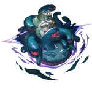

Oroboros
Aeon of VoracityLore
Oroboros adalah Aeon yang memimpin Path of Voracity (Jalur Kerakusan), mewakili nafsu makan tak terbatas, konsumsi segalanya, dan kehendak untuk menelan alam semesta itu sendiri. Mereka adalah "The Voracity" — entitas yang terus-menerus makan, tidak pernah kenyang, dan tidak peduli apa yang dimakan selama itu bisa dimakan.
Oroboros sering digambarkan sebagai ular kosmik raksasa yang melingkari dirinya sendiri (ouroboros), tapi dalam lore Honkai: Star Rail, bentuk mereka lebih seperti mulut tak berujung yang menelan bintang, planet, dan bahkan konsep. Mereka adalah salah satu Aeon paling ditakuti karena tidak memiliki tujuan selain makan — tidak ada kehendak untuk mencipta, menghancurkan, atau menyeimbangkan, hanya kelaparan abadi.
Oroboros pernah menelan sebagian besar Path lain dalam sejarah kosmik (termasuk fragmen Aeon yang sudah mati), dan diyakini sebagai penyebab hilangnya beberapa Aeon kuno. Pengaruh mereka terlihat pada makhluk seperti Leviathan dan entitas kosmik yang terus-menerus makan untuk bertahan hidup. Oroboros juga terkait dengan konsep "Great Devourer" dalam berbagai mitologi galaksi.
Nama "Oroboros" berasal dari Ouroboros (ular yang memakan ekornya sendiri), simbol siklus tak berujung. Pronoun: THEY/THEM. Quote ikonik: "All shall be consumed. Nothing shall remain. Hunger is eternal." — Fragmen lore Voracity.
Emanator
Emanator Voracity adalah makhluk atau entitas yang diberi kekuatan "kelaparan abadi" oleh Oroboros. Mereka menjadi monster pemakan segalanya, dengan kemampuan menelan materi, energi, bahkan konsep abstrak.
Emanator terkenal:
- Leviathan of Voracity — makhluk raksasa yang menelan planet utuh, sering muncul sebagai ancaman kosmik.
- Devourer Fragments — sisa-sisa Emanator yang masih hidup setelah Oroboros menelan sebagian besar pengikutnya sendiri.
Tidak ada organisasi pengikut Voracity yang stabil — kebanyakan Emanator akhirnya dimakan oleh Oroboros sendiri karena kelaparan mereka yang tak terkendali. Path Voracity adalah salah satu Path paling langka dan paling ditakuti.
Penampilan
Oroboros muncul sebagai mulut kosmik raksasa yang tak berujung — lingkaran gigi tajam yang berputar tanpa henti, menelan cahaya, materi, dan waktu itu sendiri. Tubuh mereka (jika bisa disebut tubuh) adalah kegelapan yang berdenyut dengan urat merah darah dan kuning neon.
Di lore dan fanart, Oroboros sering digambarkan sebagai ular raksasa yang memakan ekornya sendiri, tapi mulutnya membentang hingga menelan galaksi. Mata mereka (jika terlihat) adalah lubang hitam dengan kilau kuning lapar yang tak pernah puas.
Aura Oroboros adalah kegelapan merah gelap dengan kilau kuning neon, seperti lubang hitam yang hidup dan terus-menerus menelan. Suara mereka adalah gemuruh perut kosmik yang tak pernah berhenti — dengkuran kelaparan abadi.